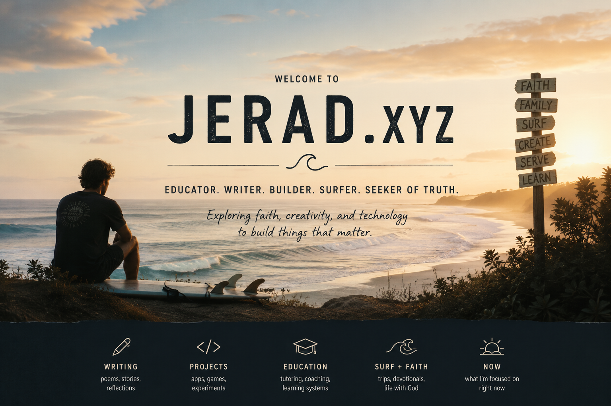

Writing
Poems and notes
A public shelf for pieces that are finished enough to share, without making the whole homepage feel like a content management system.

Poems, apps, notes, photos, and saltwater practice
The image can carry the welcome. The page underneath can stay quiet: writing, projects, education, surf, faith, and what I am focused on now.
Start hereDrafts, experiments, app ideas, and work that is still finding its shape.
02Poems, posts, learning notes, and reflections from tutoring and practice.
03Photography, illustrations, references, and visual notes from the field.
04Data, iOS, education, cognitive science, surfing, sailing, and California coastlines.
Current shape
The full site can still keep a private creation workflow, but the public homepage does not need to show every control. This version makes the studio feel like an invitation first.
A single private "Add work" action could live behind the scenes, while visitors see a clearer map of poems, writing, visuals, and background.
Writing
A public shelf for pieces that are finished enough to share, without making the whole homepage feel like a content management system.
Visuals
A simple image lane for surf, sail, people, sketches, and places that keep showing up in the work.

About
Tutoring, app building, surfing, songs, stories, and data work all circle the same question: what is happening here, and what would help?